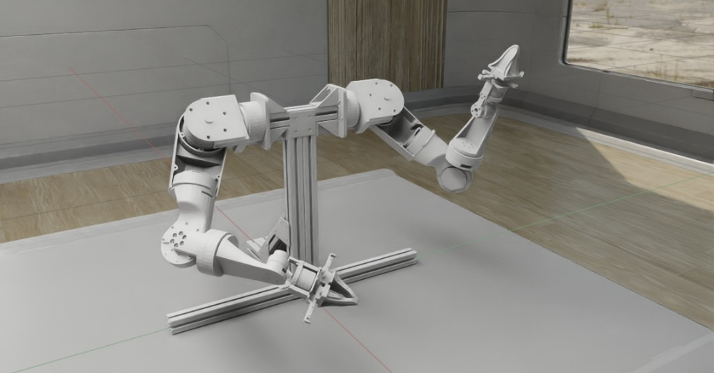
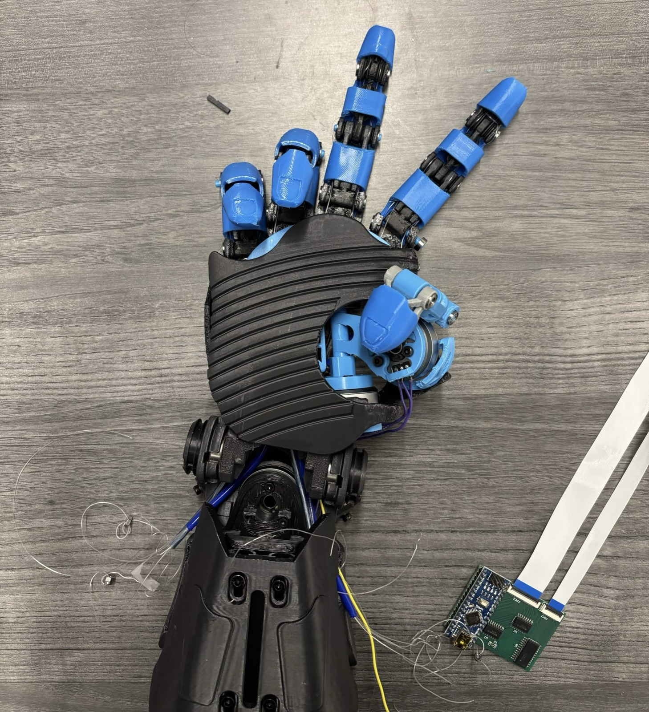
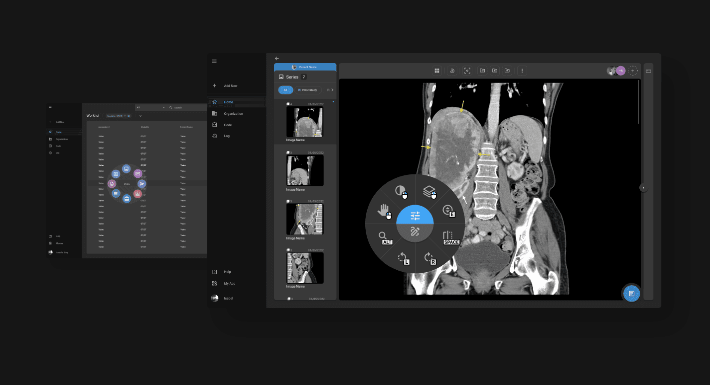
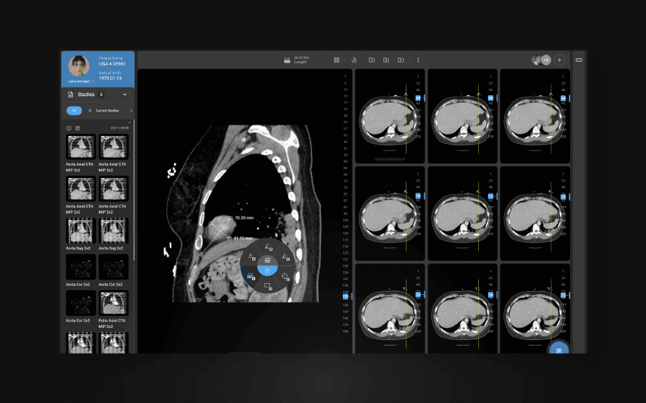
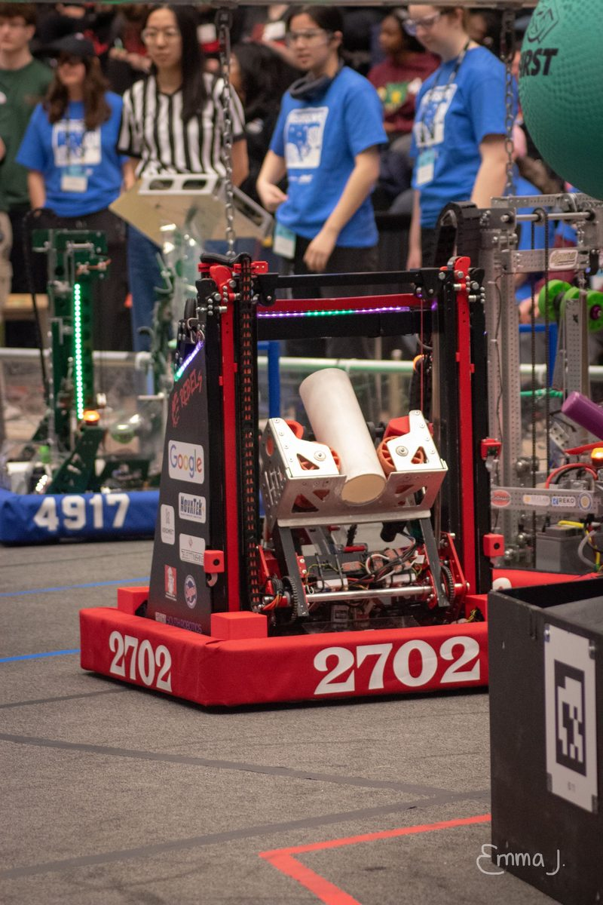
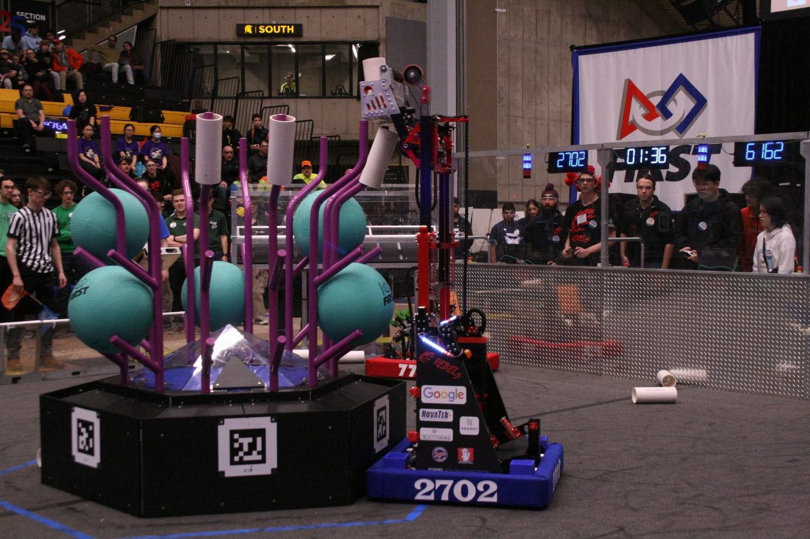

I'm an engineer based out of Waterloo and Toronto, focused on physical AI and autonomous
robotics. Over the past few years I've worked on robots from competition bots to humanoids,
across everything from software and hardware to autonomy and AI. Right now I'm building
humanoid robots with WATonomous.
What motivates me most is seeing engineering make a positive impact on people's lives,
especially in medtech. I previously worked on AI/ML for medical imaging at Ramsoft.
I also love photography, sports, and reading.
Experience
Waterloo, ONMay 2026 – Present
WATonomous
Robotics Engineer · Humanoid Team
Building UWaterloo's first humanoid robot. Working across the stack on physical AI, from 3D SLAM and perception to learned policies for autonomy, down to the firmware and simulation that connect them to real hardware.
ROS 2
C++
PyTorch
Isaac Lab
MuJoCo
RTAB-Map
Foxglove
VLA fine-tuning


Toronto, ONMay – Aug 2026
Ramsoft
AI/ML Software Engineer Intern
Worked on software and AI for medical imaging technology used by healthcare professionals in hospitals and imaging centres around the world, including a production AI assistant and a data analysis agent for the OmegaAI platform.
AI/ML
LLM agents
RAG
Azure


University of WaterlooJun 2024 – Sep 2025
Computer Vision for Smart Systems Lab
Research Assistant
Developed and integrated a low-cost motion capture system for tracking autonomous drones indoors, as part of the CViSS lab at the University of Waterloo.
Ceres Solver
OpenCV
Python
Hardware
Waterloo, ONJan 2023 – May 2025
FIRST Robotics Team 2702
Software Developer & Team Lead
Built robots to compete in the FIRST Robotics Competition, working across computer vision systems, mechanical prototyping, and full-stack development. Directed team strategy by using data to select playoff alliances, directly contributing to playoff success.
OpenCV
PyTorch
Raspberry Pi
TypeScript
React


CanadaFeb 2024 – Present
Project Astraeus
Co-Founder & Chair
Empowering youth to address impactful problems while learning engineering, with branches across Canada reaching over 2,000 people, supported by UWaterloo's startup incubator. Leading an engineering team of undergraduates developing and teaching machine learning and computer vision through workshops and events.
Python
PyTorch
OpenCV
Projects
Voice-Triggered Defect Detection & Removal
Award winner · Toyota Innovation Challenge
A hands-free quality control system for production lines: a voice-triggered camera hard hat paired with a robotic arm that spots defective parts and pulls them off the line on its own.